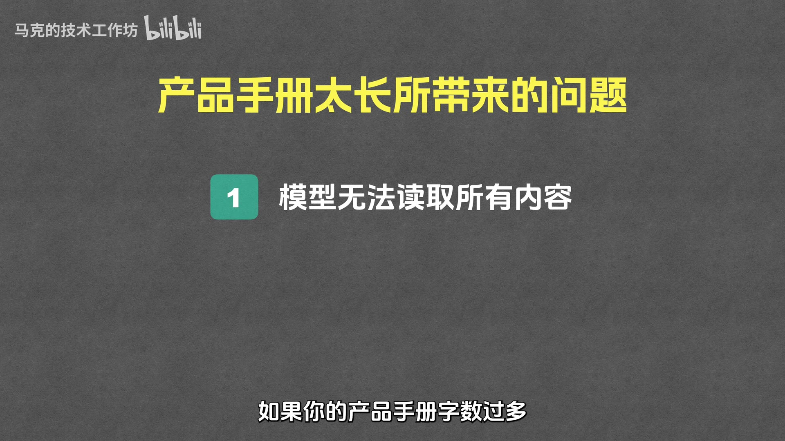
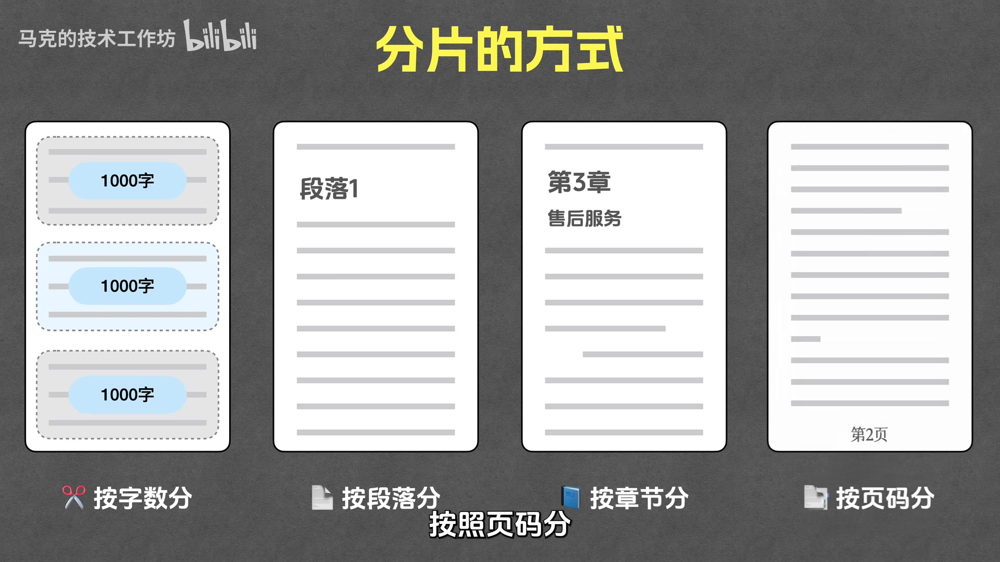
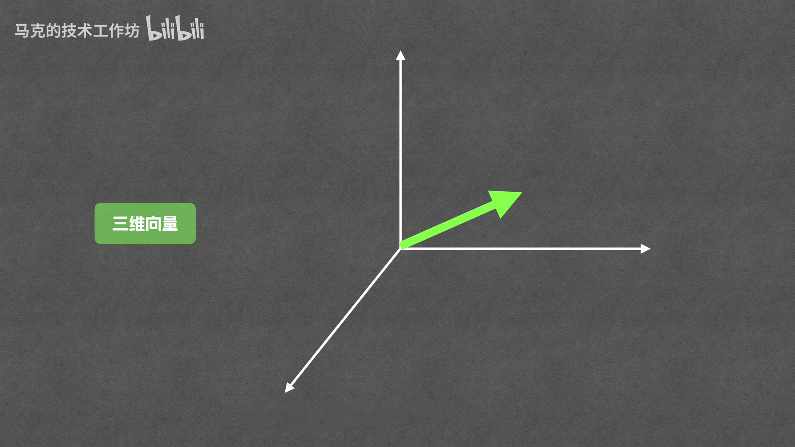
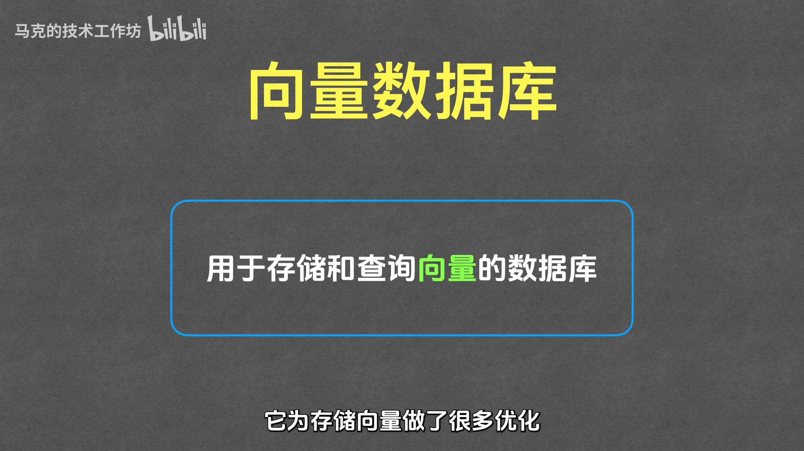
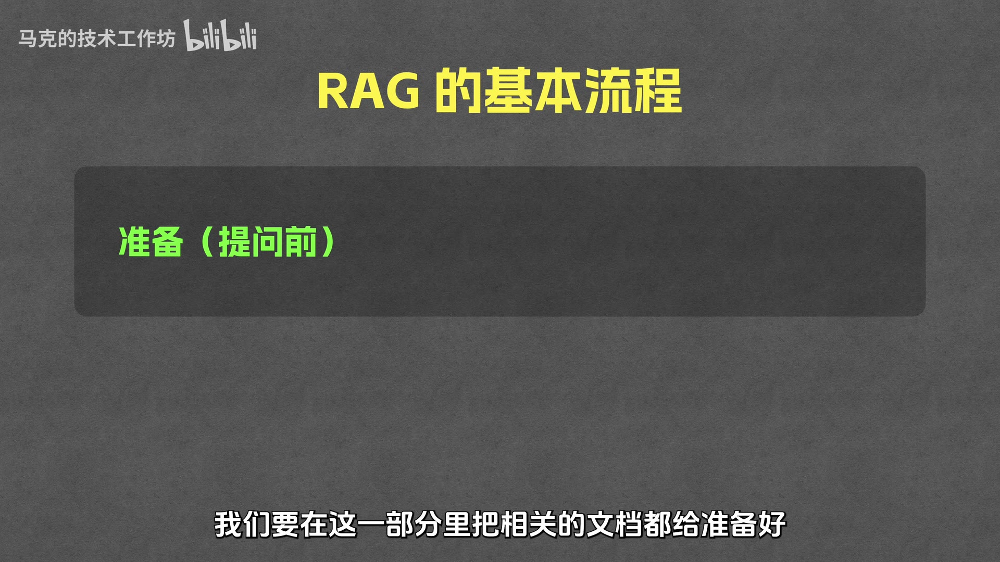
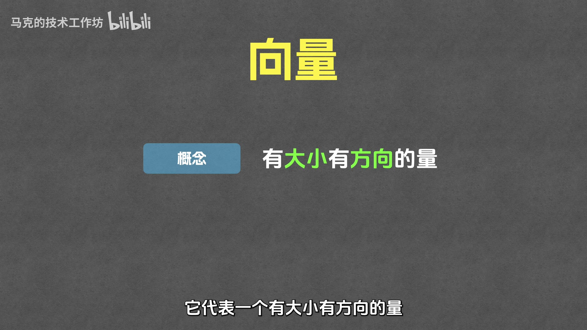
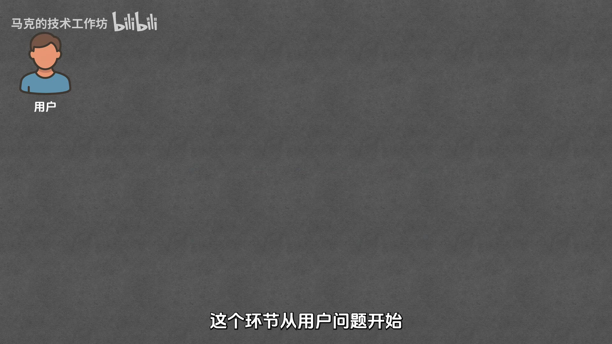
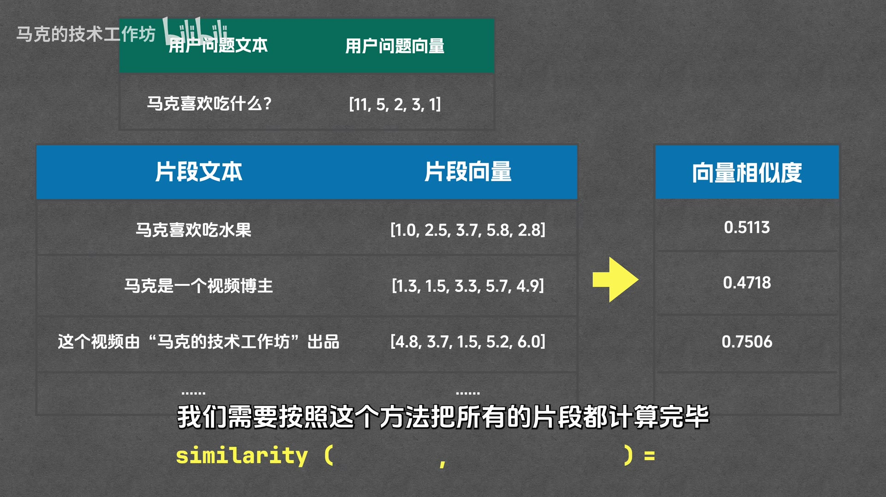
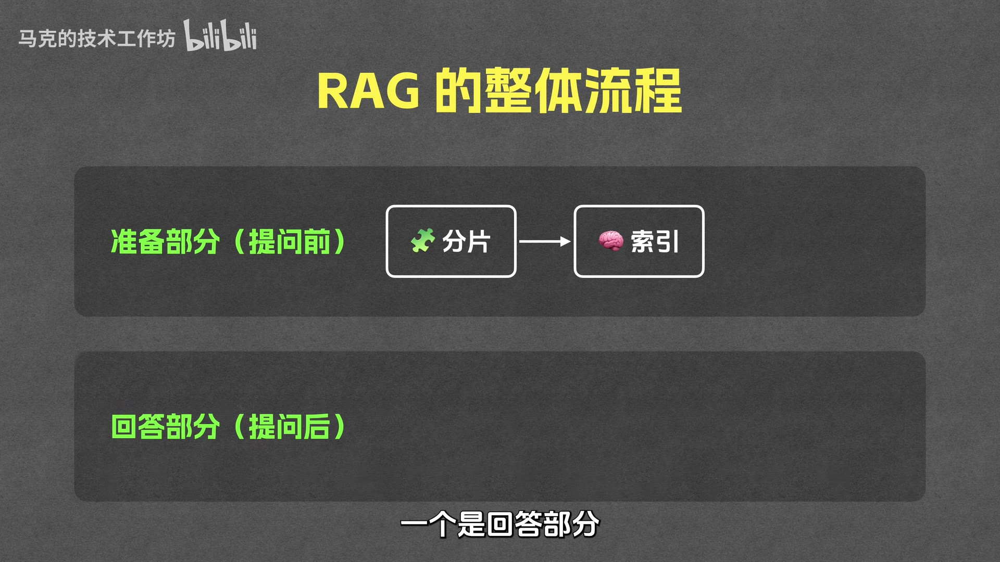

一个高质量知识库背后的技术全流程 —— 从分片、索引到召回、重排、生成
先检索，再生成
RAG（Retrieval Augmented Generation，检索增强生成）是目前最常用的 AI 问答方案之一。它的核心思想是：先从知识库中检索相关内容，再基于这些内容生成答案 —— 即"先检索，再生成"。
原视频文件较大（123.6 MB），未随仓库分发，请前往 B 站观看：
从使用场景出发，逐步拆解 RAG 的每个环节
五个环节，两个阶段 —— 准备在提问前，回答在提问后
为什么不直接把文档全发给模型？
假设你想做一个智能客服来回答公司产品相关问题。最直接的做法是把产品手册全部发给大模型 —— 但这行不通。

向量、Embedding、向量数据库
向量代表一个有大小、有方向的量，通常用一组数字表示。每个向量都有"维度"，维度等于数字的个数。
[3]）[2, 2]）[1, 2, 3]）
Embedding 是将文本转换为向量的过程。其核心目的是：含义相近的文本，转换后的向量也相近。
例如：
[1, 2][1, 1]（非常接近 ↑）[-3, -1]（距离很远）
向量数据库是专门用来存储和查询向量的数据库，它做了很多优化，并提供计算向量相似度的函数。
存储时不仅要存向量，还要存原始文本 —— 因为最终需要的是原始文本回答用户问题，向量只是中间结果。

准备阶段 2 步 + 回答阶段 3 步
将文档切分为多个片段。方式有很多种：

通过 Embedding 将每个片段文本转换为向量，然后将片段文本和对应向量都存储在向量数据库中。
过程：片段 1 → Embedding → 存入数据库 → 片段 2 → Embedding → 存入数据库 → …… 直到所有片段处理完毕。

搜索与用户问题相关片段的过程：

| 方法 | 原理 | 判断标准 |
|---|---|---|
| 余弦相似度 | 计算两个向量夹角的余弦值 | 夹角越小 → 相似度越高 |
| 欧氏距离 | 计算两个向量之间的直线距离 | 距离越小 → 相似度越高 |
| 点积 | 考虑方向关系和长度的乘积 | 值越大 → 相似度越高；方向相反为负；垂直为 0 |

从召回的 10 个片段中，再精选出 3 个与问题最相关的。
为什么不直接在召回阶段就挑 3 个？因为两个阶段使用的方法不同：
| 对比维度 | 召回（Retrieval） | 重排（Reranking） |
|---|---|---|
| 方法 | 向量相似度（余弦/欧氏/点积） | Cross-Encoder 模型 |
| 成本 | 低 | 高 |
| 耗时 | 短 | 长 |
| 准确率 | 较低 | 高很多 |
| 角色 | 粗筛（像简历筛选） | 精选（像面试） |
将重排后的 3 个最相关片段 + 用户问题一起发给大模型（如 GPT-4o、DeepSeek），让它根据片段内容来回答用户问题。

能答上这 8 题，这一篇就真的读懂了
看完之后可以动手做的事
把整期视频压缩成一张表
| 问题 | 结论 |
|---|---|
| RAG 是什么？ | 检索增强生成 —— 先从知识库检索相关片段，再基于片段生成答案 |
| 为什么不直接把文档全给模型？ | 上下文窗口有限、推理成本高、推理速度慢 |
| 分片怎么做？ | 按字数、段落、章节、页码等多种方式切分 |
| 索引做什么？ | 每个片段过 Embedding 转成向量，连同原始文本一起存进向量数据库 |
| 向量是什么？ | 有大小有方向的量，用一组数字表示；维度 = 数字个数，RAG 常用几百到几千维 |
| Embedding 的目的是什么？ | 把文本转成向量，让含义相近的文本向量也相近 |
| Embedding 模型和 LLM 是一回事吗？ | 不是。Embedding 由专门的模型完成，选型可参考 MTEB 排行榜 |
| 向量数据库为什么存原文？ | 最终要用原始文本回答用户，向量只是检索用的中间结果 |
| 召回怎么工作？ | 问题转向量 → 查向量数据库 → 取最相似的 Top 10 |
| 相似度怎么算？ | 余弦相似度（夹角越小越像）、欧氏距离（越短越像）、点积（越大越像） |
| 为什么要重排？ | 召回是便宜快速的粗筛、准确率较低；重排用 Cross-Encoder 精选 Top 3，更准但更贵更慢 |
| 生成阶段做什么？ | 把 Top 3 片段 + 用户问题一起发给大模型作答 |
| 两个阶段分别发生在什么时候？ | 准备阶段（分片+索引）在用户提问前；回答阶段（召回+重排+生成）在提问后 |
视频中的关键概念
| 术语 | 英文 | 解释 |
|---|---|---|
| RAG | Retrieval Augmented Generation | 检索增强生成，先检索再生成的 AI 问答方案 |
| 向量 | Vector / Embedding | 一组数字表示的有大小有方向的量 |
| 嵌入 | Embedding | 将文本转换为向量的过程 |
| 分片 | Chunking | 将文档切分为多个小片段 |
| 向量数据库 | Vector Database | 专门存储和查询向量的数据库 |
| 召回 | Retrieval | 从所有片段中粗筛出 Top K 相关片段 |
| 重排 | Reranking | 用更精确的模型从召回结果中精选 |
| Cross-Encoder | Cross-Encoder | 用于重排的高准确率模型 |
| 余弦相似度 | Cosine Similarity | 通过夹角余弦值衡量向量相似度 |
| 欧氏距离 | Euclidean Distance | 两个向量之间的直线距离 |
| 点积 | Dot Product | 考虑方向和长度的向量运算 |
| MTEB | Massive Text Embedding Benchmark | Embedding 模型评测排行榜 |
| 上下文窗口 | Context Window | 模型一次能处理的最大 Token 数 |